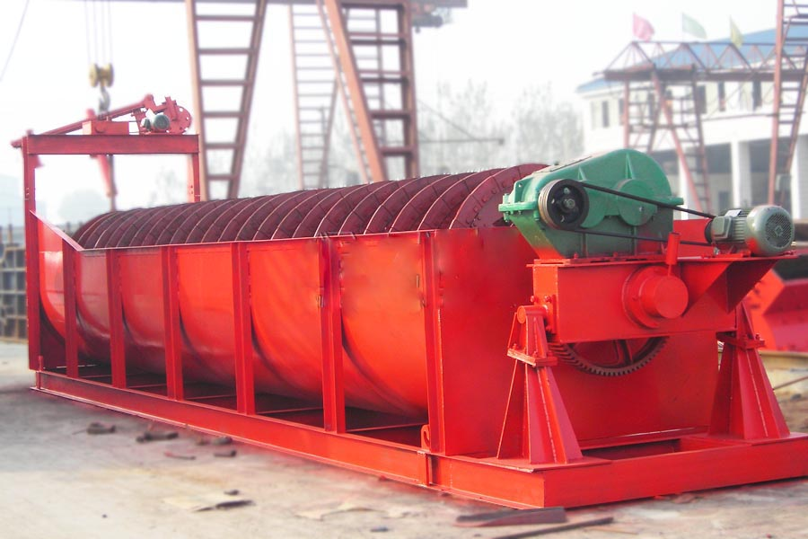
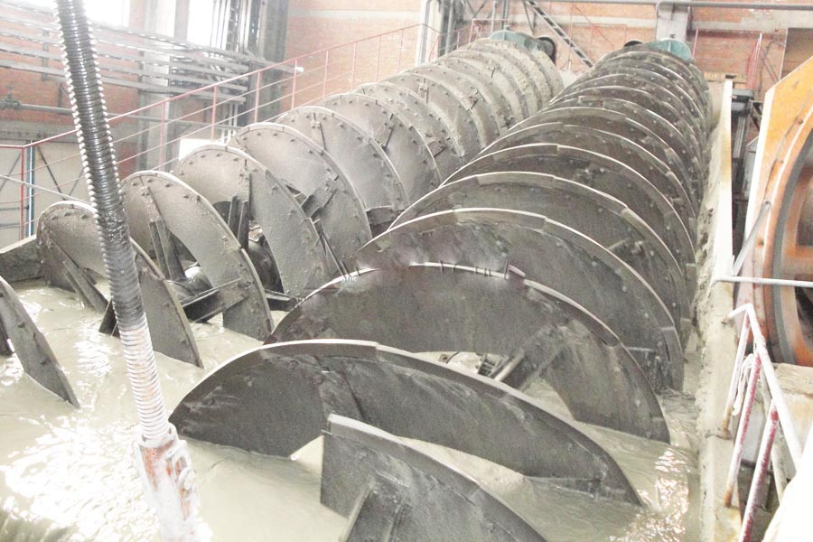

- Home >
- benefication plant >
- mineral processing spiral classifier

Construction waste crushing production line

Mobile construction waste crushing station for urban construction waste crushing.
mineral processing spiral classifier
mineral processing spiral classifier presentation
Classifier are: high weir single screw and twin screw, sinking four kinds of single screw and twin screw classifier.

Mineral processing spiral classifier Scope
Mineral processing spiral classifier is widely used in the concentrator with the ball dubbed sub-Cheng Cheng closed cycle shunt mineral sands, or used in a gravity concentrator to grade ore and fine clay, and metal beneficiation processes for pulp particle size grading and washing job off the mud, dehydration and other operations. The machine has a simple structure, reliable, easy to operate. Grader is a different means of solid particle sizes, different specific gravity, thus settling velocity different principle in the liquid fine mineral particles floating in the water to overflow, coarse mineral particles sink to the bottom. Discharged into the upper part of the spiral, to a hierarchical classification of mechanical equipment, the mill can grind the material powder level in the filter, and then use the coarse material piece rotary vane screw screwed into the mill feed, the filter out the fine material discharged from the overflow pipe. The machine base is made of channel steel, steel plate welded body. The head of the screw shaft, the shaft head, using pig iron sleeve, wear durability, improve device-electric and manual.
Mineral processing spiral classifier structure
Grader mainly by the transmission device, spirochetes, tank, lifting mechanism, the lower seat (bush) and of discharge valves
Mineral processing spiral classifier technical parameters
| Model | 300 | 500 | 750 | 1000 | 1200 | 1500 | 2000 | 2-1200 | 2-1500 | |
| Type | High weir type, sinking, single, double helix, standard, extended | |||||||||
| Screw diameter | 300 | 500 | 750 | 1000 | 1200 | 1500 | 2000 | 1200 | 1500 | |
| Screw Speed | 8.3-2.2 | 8.5-15.5 | 2.4-9.9 | 1.6-7.4 | 5.6 | 2.5-6 | 3.6(5.5) | 5.6 | 2.5-6 | |
| output | Return sand | 35-105 | 145-260 | 100-445 | 160-700 | 1145-1370 | 1120-2680 | 3240-5940 | 2290-2740 | 2240-5360 |
| Overflow | 10-30 | 45-77 | 31-165 | 50-260 | 150 | 230 | 400 | 300 | 460 | |
| Supporting the motor | Model | Y90L-6 | Y90L-6 | Y132S-6 | Y132M2-6 |
Y132M2-6 Y90L-4 |
Y160M-6 Y90L-4 |
Y160L-4(6) Y100L2-4 |
Y132M2-6 Y90L-4 |
Y160M-6 Y90L-4 |
| Power | 1.1 | 1.1 | 3 | 5.5 |
5.5 1.5 |
7.5 1.5 |
15(11) 3 |
5.5 1.5 |
7.5 1.5 |
|
| Number of units | 1 | 1 | 1 | 1 |
1 1 |
1 1 |
1 1 |
2 2 |
2 2 |
|
| Dimensions | Long | 3844 | 5480 | 6270 | 8004 | 7979 | 10196 | 10590 | 8520 | 10270 |
| width | 645 | 940 | 1275 | 1570 | 1700 | 1976 | 4634 | 2760 | 3490 | |
| height | 835 | 1274 | 1584 | 1934 | 3087 | 4080 | 4491 | 3087 | 4080 | |
| weight | Host | 668 | 1620 | 2683 | 4200 | 7710 | 11283 | 19930 | 10936 | 22093 |
| Motor | 27 | 27 | 65 | 84 | 110 | 180 | 200 | 220 | 240 | |

Spiral classifier works
Spiral classifier by means of different solid particle sizes, different specific gravity, thus settling velocity different principle in the liquid fine mineral particles floating in the water to overflow, coarse mineral particles sink to the bottom. Discharged into the upper part of the spiral, to a hierarchical classification of mechanical equipment, the mill can grind the material powder level in the filter, and then use the coarse material piece rotary vane screw screwed into the mill feed, the filter out the fine material discharged from the overflow pipe. The machine base is made of channel steel, steel plate welded body. The head of the screw shaft, the shaft head, using pig iron sleeve, wear durability, improve device-electric and manual.
Leave Me A Message, Now
If you have any questions regarding equipment prices, production line configuration or other problems, you can send a message to us, we will contact you soon.